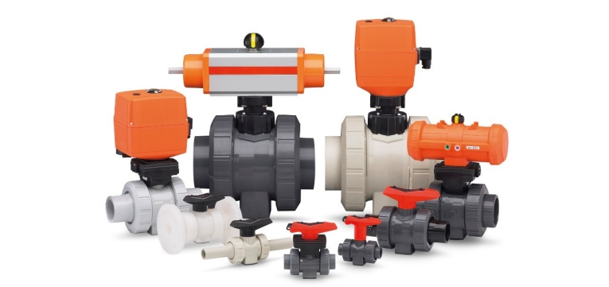
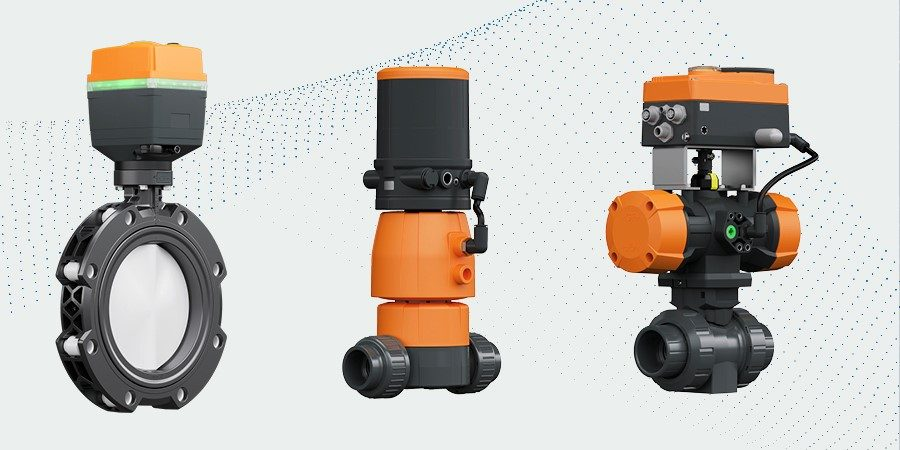
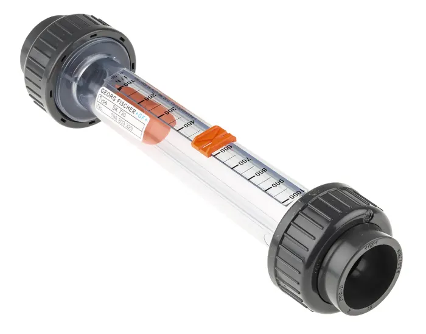
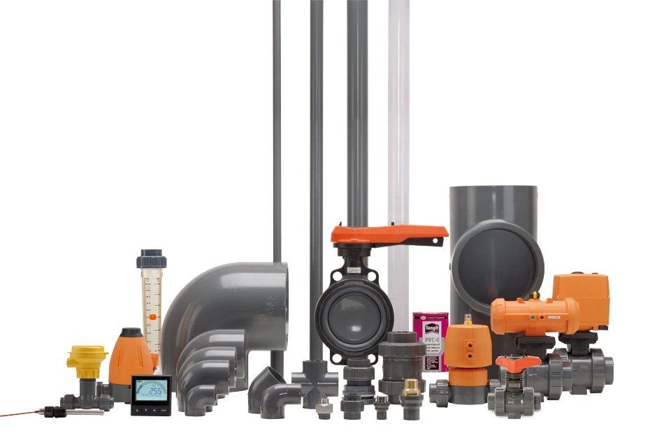
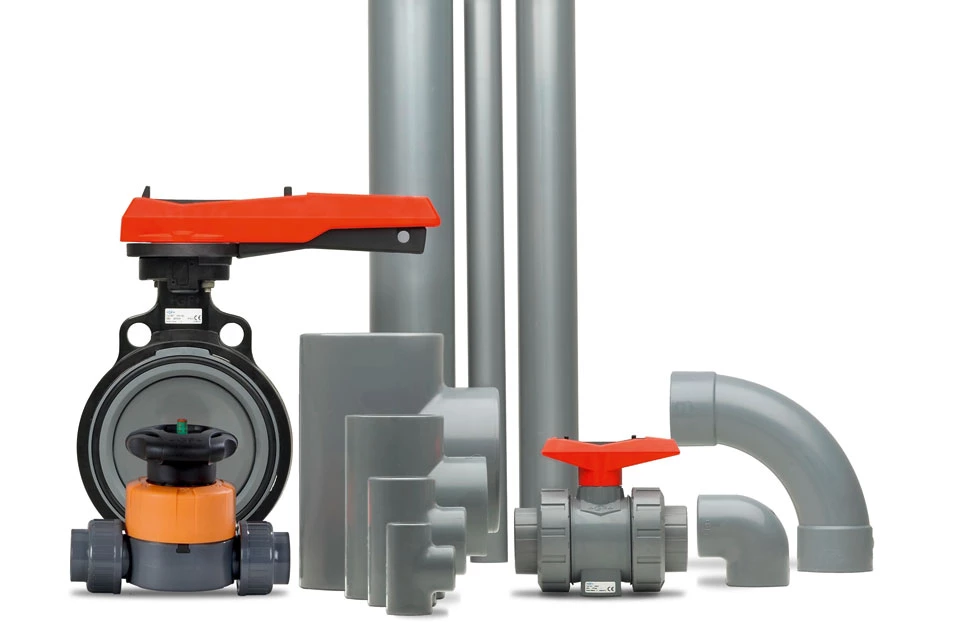

Xuất xứ: Thụy Sĩ
Georg Fischer (GF Piping Systems) cung cấp hệ thống ống và giải pháp kiểm soát lưu chất cho ngành hoá chất, xử lý nước, vi điện tử và công nghiệp nặng — bền với ăn mòn và áp suất, tuổi thọ tính bằng hàng chục năm trong môi trường mà ống kim loại không trụ được.
Fast Group là đại lý bán hàng chính hãng GF Piping Systems tại Việt Nam — nhập khẩu hàng chính hãng, tư vấn chọn vật liệu và cấp áp phù hợp với lưu chất, hỗ trợ đối chiếu part number và xử lý đơn hàng cho dự án lẫn bảo trì.
Điểm khó nhất khi mua hàng GF không nằm ở chủng loại van mà ở tổ hợp vật liệu thân – vật liệu gioăng – kiểu nối – cấp áp – cỡ DN. Cùng một Type 546 có tới hàng nghìn biến thể; chọn sai gioăng EPDM thay vì FPM trong đường hoá chất là lỗi phổ biến và tốn kém.
Fast Group vận hành cơ sở dữ liệu sản phẩm GF riêng: tra cứu part number GF Piping Systems trên gfps.vn — lọc theo loại van, vật liệu, cỡ DN và kiểu nối để xác nhận đúng mã trước khi gửi RFQ.
Georg Fischer (GF) khởi nguồn năm 1802 khi Johann Conrad Fischer mua một cối xay chạy bằng nước gần Schaffhausen (Thụy Sĩ) để luyện đồng và nghiên cứu hợp kim. Năm 1827 hãng chế tạo thành công gang dẻo, và năm 1864 trở thành đơn vị đầu tiên ở châu Âu sản xuất phụ kiện ống bằng kỹ thuật đúc gang dẻo — di sản kỹ thuật vẫn tiếp nối đến nay.
Hơn hai thế kỷ sau, GF hiện diện tại gần 35 quốc gia với ba mảng: GF Piping Systems, GF Casting Solutions và GF Machining Solutions. GF Piping Systems là nhà cung cấp giải pháp dẫn lưu chất hàng đầu, chuyên hệ thống ống và phụ kiện nhựa, kim loại chất lượng cao cho việc vận chuyển lưu chất an toàn và bền vững.




GF định danh sản phẩm theo số Type. Mỗi Type là một kết cấu van, bên dưới là hàng trăm đến hàng nghìn biến thể theo vật liệu thân, vật liệu gioăng, kiểu nối và cỡ DN. Bảng dưới liệt kê các Type Fast Group thường cung cấp nhất tại Việt Nam.
Khi tra mã, luôn bắt đầu từ số Type rồi mới lọc dần theo vật liệu thân, vật liệu gioăng, kiểu nối và cỡ DN — làm ngược lại sẽ rất dễ lạc giữa hàng nghìn biến thể.
| Nhóm | Các Type tiêu biểu | Quy mô cấu hình | Ứng dụng chính |
|---|---|---|---|
| Van bi (ball valve) | Type 546, 543, 542, 375, 127, 104, 179, 180, 182, 183, 184, 522, 523, 544, 547 | Type 546 — trên 4.200 cấu hình; Type 543 — trên 2.700 | Đóng/mở đường ống hoá chất, nước, khí |
| Van màng (diaphragm valve) | Type 514, 517, 515, 519, 317, 604, 605 | Type 514 — 458 cấu hình | Lưu chất chứa hạt, bùn, hoá chất mạnh, UPW |
| Van bướm (butterfly valve) | Type 578, 240, 565L, 567, 243, 244, 145, 146, 147 | Type 578 — 529 cấu hình | Đường ống cỡ lớn, tổn thất áp thấp |
| Van một chiều (check valve) | Type 561, 562, 369, 303, 304 | Type 561 — 690 cấu hình | Chống dòng chảy ngược sau bơm |
| Phụ kiện & khớp nối | Tee, cút, côn, măng sông, mặt bích, union | Theo từng hệ vật liệu | Thi công và sửa chữa đường ống |
| Ống | Ống PVC-U, CPVC, PP-H, PVDF, PE100, ABS | Theo cấp áp PN và cỡ DN | Toàn tuyến đường ống công nghệ |
| Thiết bị đo & điều khiển | Dòng Signet — lưu lượng, pH/ORP, độ dẫn | — | Giám sát và điều khiển quá trình |
Xem chi tiết từng nhóm: van bi GF theo từng Type, van màng cho lưu chất chứa hạt và van bướm cho đường ống cỡ lớn — mỗi trang liệt kê đầy đủ biến thể kèm thông số.
Vật liệu quyết định tuổi thọ đường ống nhiều hơn bất kỳ yếu tố nào khác. Bảng dưới là khung chọn nhanh; với lưu chất cụ thể cần đối chiếu bảng tương thích hoá chất của hãng, đặc biệt khi có dung môi hữu cơ hoặc lưu chất ở nồng độ cao.
Vật liệu cũng quyết định phương pháp thi công: hệ dán keo (PVC-U, CPVC, ABS) lắp nhanh nhưng khó tháo sửa, hệ hàn (PP-H, PVDF, PE100) cho mối nối liền khối bền hơn nhưng cần thợ và thiết bị hàn chuyên dụng.

| Vật liệu | Dải nhiệt độ | Tương thích hoá chất | Phương pháp nối | Ứng dụng điển hình |
|---|---|---|---|---|
| PVC-U | 0 – 60 °C | Axit loãng, kiềm, nước, muối | Dán keo (solvent cement) | Cấp & thoát nước, xử lý nước, mạ điện |
| CPVC | 0 – 95 °C | Như PVC-U nhưng chịu nhiệt cao hơn | Dán keo | Nước nóng công nghiệp, hoá chất ấm |
| PP-H | 0 – 80 °C | Kiềm mạnh, dung môi, axit trung bình | Hàn đối đầu / hàn socket | Nhà máy hoá chất, xử lý nước thải |
| PVDF | −20 – 140 °C | Axit đậm đặc, dung môi, halogen | Hàn đối đầu / IR | Vi điện tử, UPW, hoá chất khắc nghiệt |
| PE100 | −40 – 60 °C | Nước, khí, hoá chất phổ thông | Hàn đối đầu / hàn điện trở (ELGEF) | Tuyến ống chôn ngầm, cấp nước, khí đốt |
| ABS | −40 – 60 °C | Nước lạnh, muối | Dán keo | Hệ lạnh, nước muối, chiller |
Lưu ý: cấp áp danh nghĩa PN giảm khi nhiệt độ tăng — một ống PN16 PVC-U ở 40 °C không còn chịu được 16 bar. Xem hệ số giảm áp theo nhiệt độ của từng vật liệu tại trang vật liệu GF Piping Systems.
Phải đồng bộ với vật liệu đường ống. Lắp van PVC-U vào tuyến PP-H không chỉ sai về tương thích hoá chất mà còn không hàn nối được — hai hệ dùng phương pháp nối hoàn toàn khác nhau.
EPDM hợp với nước, kiềm, axit loãng nhưng bị phá huỷ bởi dầu và dung môi hydrocarbon. FPM (Viton) hợp với dầu, dung môi và axit đậm đặc nhưng kém với hơi nước nóng và kiềm mạnh. Đây là lỗi chọn sai phổ biến nhất và thường chỉ lộ ra sau vài tháng vận hành.
Dán keo, hàn socket, hàn đối đầu, ren, hay mặt bích — quyết định theo vật liệu, cỡ DN và khả năng tháo lắp bảo trì sau này. Van đặt ở vị trí cần tháo định kỳ nên chọn kiểu union hoặc mặt bích.
Ký hiệu PN10/PN16 là cấp áp ở 20 °C. Ở nhiệt độ vận hành cao hơn phải nhân với hệ số giảm áp của vật liệu — bỏ qua bước này là nguyên nhân phổ biến gây nứt vỡ đường ống nhựa.
Tay gạt, tay quay, truyền động khí nén (đơn tác động / kép) hay truyền động điện. Với van truyền động cần khai báo thêm áp suất khí điều khiển, điện áp và tín hiệu phản hồi vị trí nếu đấu về DCS.
Fast Group là đại lý bán hàng, nhập khẩu hàng GF Piping Systems chính hãng và cung cấp bộ chứng từ phục vụ nghiệm thu dự án:
Van và phụ kiện PVC-U, CPVC cỡ thông dụng thường sẵn hàng khu vực, khoảng 3–5 tuần. Hàng PVDF, van truyền động lắp cụm và cỡ DN lớn thường 8–12 tuần theo lịch sản xuất tại châu Âu.
Fast Group nhận rà soát BOQ đường ống, kiểm tra tính đồng bộ vật liệu giữa ống – phụ kiện – van, và cảnh báo các điểm bất hợp lý về cấp áp trước khi báo giá. Xem thêm các ngành công nghiệp phục vụ và dịch vụ cung cấp vật tư.
Fast Group là đại lý bán hàng, nhập khẩu hàng GF Piping Systems chính hãng và cung cấp đầy đủ chứng từ CO/CQ cho từng lô hàng phục vụ nghiệm thu dự án.
Khác biệt chính là nhiệt độ. PVC-U làm việc tốt đến khoảng 60 °C, CPVC lên đến khoảng 95 °C với cùng khả năng kháng hoá chất tương tự. Nếu lưu chất có lúc vượt 60 °C, kể cả trong giai đoạn vệ sinh CIP, nên chọn CPVC ngay từ đầu.
Van màng phù hợp với lưu chất chứa hạt rắn, bùn, kết tinh hoặc yêu cầu vô trùng — vì không có khoang chết và đường lưu chất tách hoàn toàn khỏi cơ cấu vận hành. Van bi phù hợp hơn cho lưu chất sạch, cần tổn thất áp thấp và thao tác đóng/mở nhanh.
EPDM cho nước, kiềm và axit loãng; không dùng với dầu hay dung môi hydrocarbon. FPM (Viton) cho dầu, dung môi và axit đậm đặc; kém bền với hơi nước nóng và kiềm mạnh. Chọn theo lưu chất thực tế chứ không theo mặc định của mã van.
Rất nhiều. Riêng van bi Type 546 có trên 4.200 cấu hình theo vật liệu thân, gioăng, kiểu nối và cỡ DN; Type 543 có trên 2.700. Vì vậy nên đối chiếu trên danh sách đầy đủ các Type van GF kèm số lượng cấu hình trước khi gửi yêu cầu báo giá.
Van và phụ kiện PVC-U, CPVC cỡ thông dụng khoảng 3–5 tuần. Hàng PVDF, van truyền động lắp cụm và cỡ DN lớn thường 8–12 tuần theo lịch sản xuất tại châu Âu. Tham khảo thêm bài viết kỹ thuật về hệ đường ống nhựa công nghiệp.
Gửi part number hoặc mô tả nhu cầu — Fast Group hỗ trợ kiểm tra mã, báo giá, nhập khẩu, chứng từ và xử lý đơn hàng nhanh.